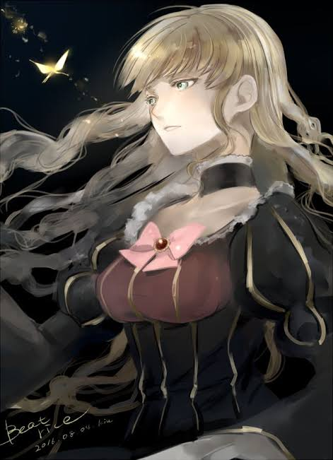
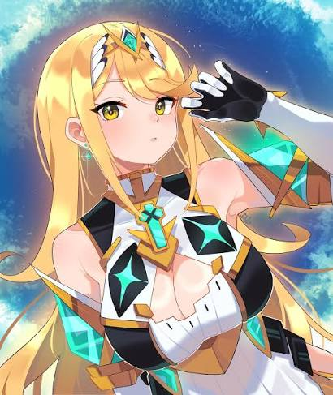
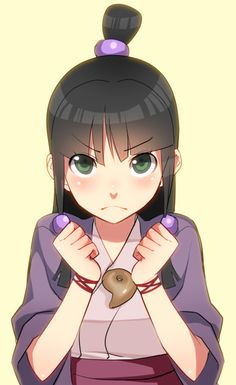
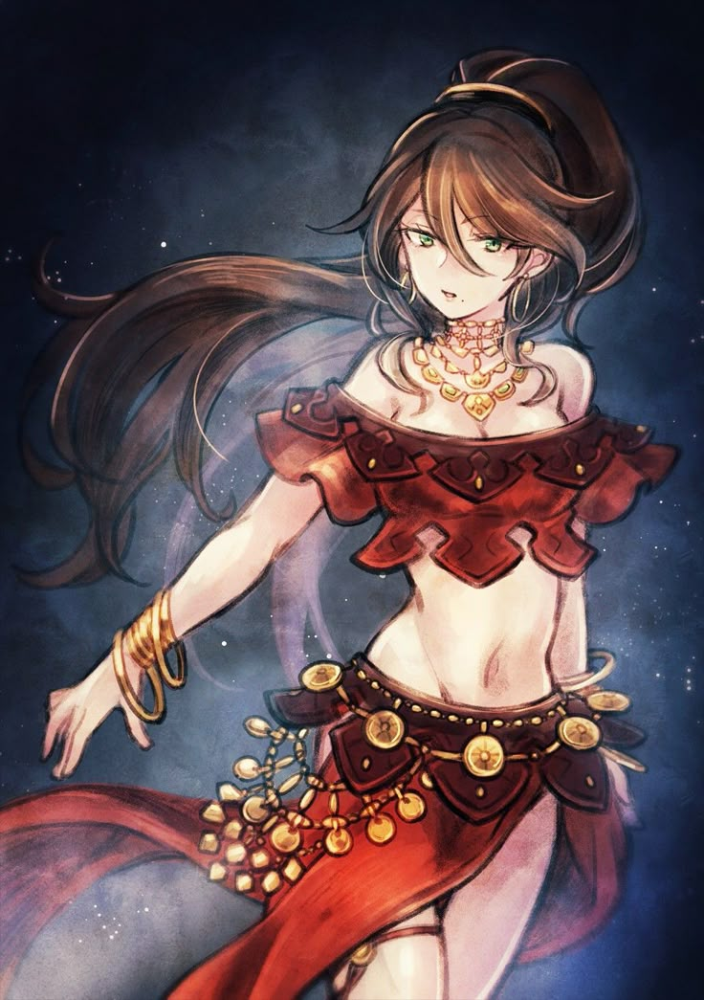
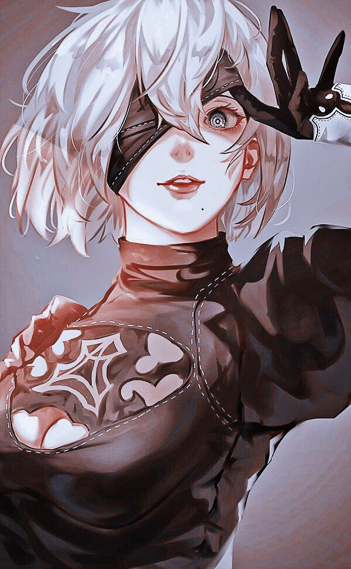
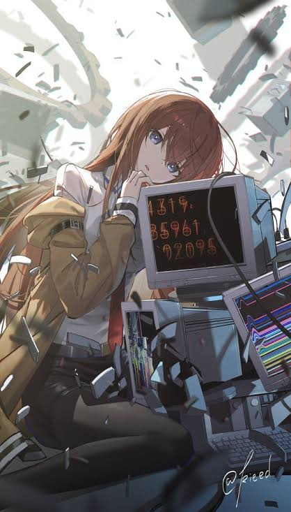
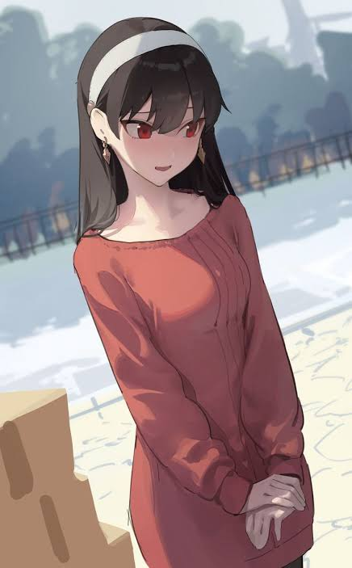
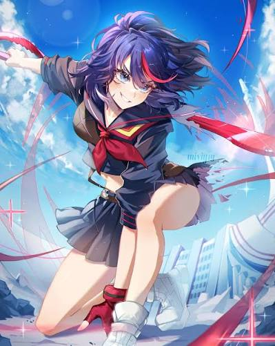
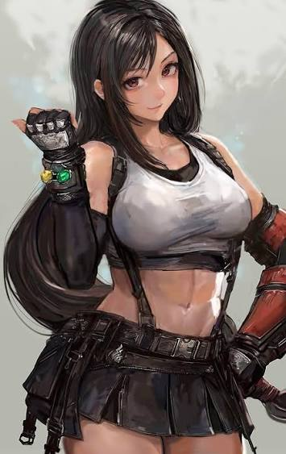
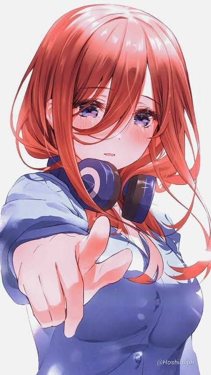

#1

Beatrice
Umineko When They Cry
La Bruja Dorada. Un quesito inolvidable por su carisma, su risa icónica y la enorme complejidad de su trasfondo en el juego del ingenio.
Mi selección definitiva de los mejores quesitos del anime, videojuegos y novelas.

La Bruja Dorada. Un quesito inolvidable por su carisma, su risa icónica y la enorme complejidad de su trasfondo en el juego del ingenio.

La Aegis de luz. Un quesito con un diseño espectacular, un poder abrumador y un desarrollo emocional clave a lo largo de la saga.

La mentora legendaria. Excelente abogada defensora, un quesito elegante, inteligente y la guía fundamental en los momentos más difíciles.

Un quesito bailarina con una de las historias de venganza y determinación más oscuras y cautivadoras en los JRPG modernos.

Un quesito androide con un diseño estético impecable, combates magistrales y una carga existencial que define su narrativa.

La brillante investigadora apodada "Christina". Un quesito tsundere sumamente inteligente que se gana el corazón de todos con su lealtad.

La Princesa de las Espinas. Un quesito adorable e ingenuo en su vida cotidiana, pero una asesina letal e imponente cuando entra en acción.

Un quesito rebelde y temperamental que destaca por su diseño audaz, su actitud combativa y su tijera gigante.

Un quesito clásico e icónico del mundo del videojuego, caracterizada por su fuerza en combate cuerpo a cuerpo y su personalidad empática.

Un quesito reservado, fanática de la historia japonesa, cuyo crecimiento personal y ternura la volvieron una de las favoritas de la serie.